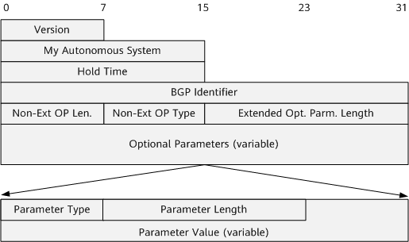
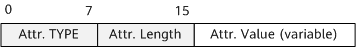
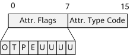

A BGP message consists of a BGP header and a data portion. BGP runs by sending five types of messages, which have the same header format. BGP messages are transmitted based on TCP (port 179). The message length varies from 19 octets to 4096 octets. The header of each BGP message is 19 octets, consisting of three fields.
The five types of BGP messages have the same header format. Figure 1 shows the format of a BGP message header.
Field |
Length |
Description |
|---|---|---|
Marker |
16 octets |
Indicates whether the information synchronized between BGP peers is complete. This field is used for calculation in BGP authentication. If no authentication is used, the field is set to all ones in binary format or all Fs in hexadecimal notation. |
Length |
2 octets (unsigned integer) |
Indicates the total length of a BGP message (including the header), in octets. The length ranges from 19 octets to 4096 octets. |
Type |
1 octet (unsigned integer) |
Indicates the BGP message type. The value of this field is an integer ranging from 1 to 5. The type codes are as follows:
|
Open messages are used for BGP connection establishment. If the value of the Type field in the message header is 1, this message is an Open message. Figure 2 shows the data portion following the Open message header.
Field |
Length |
Description |
|---|---|---|
Version |
1 octet (unsigned integer) |
Indicates the BGP version number. For BGP-4, the value of the field is 4. |
My Autonomous System |
2 octets (unsigned integer) |
Indicates the AS number of the message sender. |
Hold Time |
2 octets (unsigned integer) |
Indicates the hold time set by the message sender, in seconds. BGP peers use this field to negotiate the interval at which Keepalive or Update messages are sent so that the peers can maintain the connection between them. Upon receipt of an Open message, the FSM of a BGP speaker compares the locally configured hold time with that carried in the received Open message. The FSM uses the smaller value as the negotiation result. The value is greater than or equal to 3. A value of 0 indicates that no Keepalive messages are sent. The default value is 180. |
BGP Identifier |
4 octets (unsigned integer) |
Indicates the router ID of the message sender. |
Opt Parm Len |
1 octet (unsigned integer) |
Indicates the length of the Optional Parameters field. If the value is 0, no optional parameter is available. |
Optional Parameters |
Variable |
Indicates a list of optional BGP parameters, with each one representing a unit in TLV format.
0 7 15 +-+-+-+-+-+-+-+-+-+-+-+-+-+-+-+-+-+-+-+-... | Parm.Type | Parm.Length | Parm.Value (variable) +-+-+-+-+-+-+-+-+-+-+-+-+-+-+-+-+-+-+-+-...
+------------------------------+ | Capability Code (1 octet) | +------------------------------+ | Capability Length (1 octet) | +------------------------------+ | Capability Value (variable) | +------------------------------+
|
With the increase of BGP capabilities, when a BGP session negotiates multiple capabilities, the length of an Open message may exceed 255 bytes. You can run the peer extended-open-message command to use the extended format of an Open message.

Field |
Length |
Description |
|---|---|---|
Version |
1 octet (unsigned integer) |
Indicates the BGP version number. For BGP-4, the value of the field is 4. |
My Autonomous System |
2 octets (unsigned integer) |
Indicates the AS number of the message sender. |
Hold Time |
2 octets (unsigned integer) |
Indicates the hold time set by the message sender, in seconds. BGP peers use this field to negotiate the interval at which Keepalive or Update messages are sent so that the peers can maintain the connection between them. Upon receipt of an Open message, the FSM of a BGP speaker compares the locally configured hold time with that carried in the received Open message. The FSM uses the smaller value as the negotiation result. The value of Hold Time can be 0 (no Keepalive message is sent) or greater than or equal to 3. The default value is 180. |
BGP Identifier |
4 octets (unsigned integer) |
Indicates the router ID of the message sender. |
Non-Ext OP Len. |
1 octet (unsigned integer) |
The value of this field is fixed at 255. |
Non-Ext OP Type |
1 octet (unsigned integer) |
IANA has registered the optional parameter extension length type code 255 as an extended optional parameter type for BGP Open messages. |
Extended Opt.Parm.Length |
2 octets (unsigned integer) |
Length of extended optional parameters. |
Optional Parameters |
Variable |
Indicates a list of optional BGP parameters, with each one representing a unit in TLV format. 0 7 15 23 +-+-+-+-+-+-+-+-+-+-+-+-+-+-+-+-+-+-+-+-+-+-+-+-+ | Parm.Type | Parm.Length | +-+-+-+-+-+-+-+-+-+-+-+-+-+-+-+-+-+-+-+-+-+-+-+-+ ~ Parm.Value (variable) ~ | |
|
Update messages are used to transfer routing information between BGP peers. The value of the Type field in the header of an Update message is 2. Figure 4 shows the format of an Update message without the header.
Field |
Length |
Description |
|---|---|---|
Withdrawn Routes Length |
2 octets (unsigned integer) |
Indicates the length of the Withdrawn Routes field, in octets. If the value is 0, the Withdrawn Routes field is omitted. |
Withdrawn Routes |
Variable |
Contains a list of routes to be withdrawn. Each entry in the list contains the Length (1 octet) and Prefix (length-variable) fields.
|
Total Path Attribute Length |
2 octets (unsigned integer) |
Indicates the total length of the Path Attributes field. If the value is 0, both the Network Layer Reachability Information (NLRI) field and the Path Attributes field are omitted in the Update message. |
Path Attributes |
Variable |
Indicates a list of path attributes in the Update message. The type codes of the path attributes are arranged in ascending order. Each path attribute is encoded as a TLV (<attribute type, attribute length, attribute value>) of variable length. The following shows an example. Figure 5 Format of a BGP path attribute TLV
 Attr.TYPE occupies two octets (unsigned integer), including the one-octet Flags field (unsigned integer) and the one-octet Type Code field (unsigned integer). Figure 6 TLV structure-Type
 Attr.Flags: occupies one octet (eight bits) and indicates the attribute flag. The meaning of each bit is as follows: O (Optional bit): defines whether the attribute is optional. The value 1 indicates an optional attribute, whereas the value 0 indicates a well-known attribute. T (Transitive bit): defines whether the attribute is transitive. For an optional attribute, the value 1 indicates that the attribute is transitive, whereas the value 0 indicates that the attribute is non-transitive. For a well-known attribute, the value must be set to 1. P (Partial bit): defines whether the information in an optional-transitive attribute is partial. If the information is partial, P must be set to 1; if the information is complete, P must be set to 0. For well-known attributes and for optional non-transitive attributes, P must be set to 0. E (Extended Length bit): defines whether the length (Attr. Length) of the attribute needs to be extended. If the attribute length does not need to be extended, E must be set to 0 and the attribute length is 1 octet. If the attribute length needs to be extended, E must be set to 1 and the attribute length is 2 octets. U (Unused bits): indicates that the lower-order four bits of Attr. Flags are not used. These bits are ignored on receipt and must be set to 0. Attr.Type Code: indicates the attribute type code and occupies 1 octet (unsigned integer). For details about the type codes, see Table 5. Attr.Value: varies with Attr.Type Code. |
NLRI |
Variable |
Indicates a list of IP address prefixes in the Update message. Each address prefix in the list is encoded as a 2-tuple LV (<prefix length, the prefix of the reachable route>). The encoding mode is the same as that used for Withdrawn Routes. |
Attribute Type Code |
Attribute Value |
|---|---|
1: Origin |
IGP, EGP, or Incomplete |
2: As_Path |
AS_Set, AS_Sequence, AS_Confed_Set, or AS_Confed_Sequence |
3: Next_Hop |
Next-hop IP address |
4: Multi_Exit_Disc |
MED, which is used to determine the optimal route when traffic enters an AS. |
5: Local_Pref |
Local_Pref, which is used to determine the optimal route when traffic leaves an AS. |
6: Atomic_Aggregate |
The BGP speaker selects the summary route rather than a specific route. |
7: Aggregator |
Router ID and AS number of the device that performs route summarization. |
8: Community |
Community attribute. |
9: Originator_ID |
Router ID of the originator of the reflected route. |
10: Cluster_List |
List of the route reflectors (RRs) through which the reflected route passes. |
14: MP_REACH_NLRI |
Multiprotocol reachable NLRI. |
15: MP_UNREACH_NLRI |
Multiprotocol unreachable NLRI. |
16: Extended Communities |
Extended community attribute. |
Notification messages are used to notify BGP peers of errors in a BGP process. The value of the Type field in the header of a Notification message is 3. Figure 7 shows the format of a Notification message without the header.
Field |
Length |
Description |
|---|---|---|
Error code |
1 octet |
Indicates an error type. The value 0 indicates a non-specific error type. For details about the error codes, see Table 7. |
Error subcode |
1 octet |
Provides further information about the nature of a reported error. |
Data |
Variable |
Indicates the error data. |
Error Code |
Error Subcode |
|---|---|
1: message header error |
1: Connection is not synchronized. |
2: error message length. |
|
3: error message type. |
|
2: Open message error |
1: unsupported version number. |
2: incorrect peer AS. |
|
3: incorrect BGP identifier. |
|
4: unsupported optional parameter. |
|
5: authentication failure. |
|
6: unacceptable hold time. |
|
7: unsupported capability. |
|
3: Update message error |
1: malformed attribute list. |
2: unrecognized well-known attribute. |
|
3: missing well-known attribute. |
|
4: attribute flag error. |
|
5: incorrect attribute length. |
|
6: invalid origin attribute. |
|
7: AS routing loop. |
|
8: invalid Next_Hop attribute. |
|
9: incorrect optional attribute. |
|
10: invalid network field. |
|
11: malformed AS_Path. |
|
4: hold timer expired |
0: no special error subcode defined |
5: FSM error |
0: no special error subcode defined |
1: An unexpected message is received in the OpenSent state. |
|
2: An unexpected message is received in the OpenConfirm state. |
|
3: An unexpected message is received in the Established state. |
|
6: cease |
1: The number of prefixes exceeded the maximum. |
2: administrative shutdown. |
|
3: peer de-configured. |
|
4: administrative reset. |
|
5: connection rejected. |
|
6: other configuration change. |
|
7: connection collision. |
|
8: resource run-out. |
|
9: BFD session down. |
Keepalive messages are used to maintain BGP connections. The value of the Type field in the header of a Keepalive message is 4. Each Keepalive message has only a header; it does not have a data portion. Therefore, the total length of each Keepalive message is fixed at 19 octets. Figure 8 shows the format of a Keepalive message without the header.
Field |
Length |
Description |
|---|---|---|
Marker |
16 octets |
Indicates whether the information synchronized between BGP peers is complete. This field is used for calculation in BGP authentication. If no authentication is used, the field is set to all ones in binary format or all Fs in hexadecimal notation. |
Length |
2 octets |
Indicates the total length of a BGP message (including the header), in octets. The length ranges from 19 octets to 4096 octets. |
Type |
1 octet |
Indicates the type of the BGP message following the BGP message header. There are five types of BGP messages. The value of the Type field in each Keepalive message is 4. |
Route-refresh messages are used to dynamically request a BGP route advertiser to re-send Update messages. The value of the Type field in the header of a Route-refresh message is 5. Figure 9 shows the format of a Route-refresh message without the header.
Field |
Length |
Description |
|---|---|---|
AFI |
2 octets (unsigned integer) |
Indicates the address family ID, which is defined the same as that in Open messages. |
Res. |
1 octet (unsigned integer) |
Must be all zeros. The field is ignored when a Route-refresh message is received. |
SAFI |
1 octet (unsigned integer) |
Is defined the same as that in Open messages. |